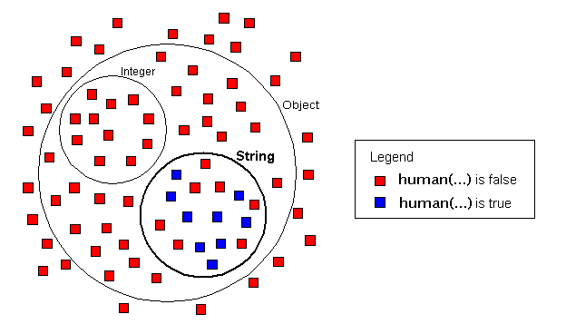
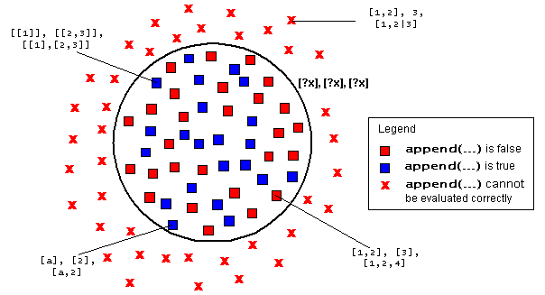

TyRuBa is a logic programming language. It was originally built to support logic meta programming: to write meta programs that generate Java code. However, TyRuBa is essentially just a simple logic programming language. So you can use it to write logic programs which are not necessarily meta programs. If you know Prolog, than you have a pretty good idea what TyRuBa is since it is very similar. TyRuBa has a few peculiarities in its syntax and its implementation that facilitate meta programming. TyRuBa also tries to be more declarative than Prolog and omits most of the impure features of Prolog such as the cut. If you don't understand this, don't worry, just read on, TyRuBa will be explained below and you don't need to know what is not in TyRuBa to use it :-)
This tutorial explains the TyRuBa logic programming language and system. It doesn't try to be a complete course in logic programming but tries to explain enough of the basics for a novice logic programmer to start messing around with TyRuBa.
If you are used to writing programs in Java, C, C++, Pascal, etc. then logic programming may be a little unusual for you. The programming languages just mentioned are all imperative programming languages. That means that programs written in them are sequences of commands to be carried out. The language has a number of control structures to determine when, how many times and in what order the instructions are carried out. These are the kinds of programming languages that most people know and use.
A logic language doesn't really have control structures and it doesn't work in terms of instructions to be carried out. So, how is that possible? How can a program "do" anything? A logic program is a description of what is "true". This description takes the form of a number of facts and rules. Facts are like phrases that declare something which is a true statement (within the context of the program). Rules are rules of inference which roughly say something like if "X" is true then "Y" is true. So these rules can be used to deduce true statements from other true statements. To make a logic program "do something" you ask it a question (usually called a query) in the style of "is it true that ...?". The systems inference engine will start looking for an answer to that question, using the rules and facts in the program. The search process that results is a computation. Logic programming languages are real programming languages in the sense that they are Turing Equivalent.
Let's have a look at our very first, very simple logic program. We'll start with some facts.
#include "predicate_declaration.rub"
human(Socrates).
human(Kris).
livesIn(Kris,Vancouver).
alive(Kris).
human(John).
livesIn(John,Denver).
human(Jacques).
livesIn(Jacques,Paris).
human(Jeanette).
livesIn(Jeanette,Paris).
dog(Fifi).
livesIn(Fifi,Vancouver).
city(Vancouver).
city(Paris).
city(Denver).
city(HongKong).
The first statement #include "predicate_declaration.rub" tells TyRuBa to load the file "predicate_declaration.rub" before loading any other statement. "predicate_declaration.rub" contains some declarations needed for this example. We will explain these declarations later on. For now simply ignore the contents of this file.
The lines after the #include are facts. Facts have the following syntactic structure:
<Fact> ::= <keyword> "(" [ <argument> ( "," <argument> )* ] ")"
The keyword with which every fact starts is a "predicate" symbol and can be interpreted as a function which assigns a truth value when given the appropriate number of arguments. In our example, the arguments to all predicates are symbols (symbols are equivalent to strings in TyRuBa, but do not require quotes around them). Arguments can also be numbers, lists or compound objects. We will talk more about these later.
The meaning of a fact is like a declaration which tells the TyRuBa engine that a given statement is true. For example we could interpret the human(...) predicate as "... is human", so what the declaration of the fact human(Socrates) tells the TyRuBa query engine is that the statement "Socrates is human" is true (i.e. this statement is a fact!).
While it is useful to try and translate your logic programs into English phrases to understand intuitively what they mean, the natural language interpretation is arbitrary. TyRuBa doesn't really care what your natural language interpretation of the facts in the program is. All it does is manipulate them as symbolic expressions to which a truth value can be assigned.
Note: If you are used to Prolog, don't get confused by the syntax. TyRuBa has similar syntax to Prolog but uses different lexical conventions for variables. All of the symbols in the above program are constants; they are NOT variables.
To create your TyRuBa program, open your favorite text editor, create a file "socrates.rub", type in the facts you see above and save the file. (you can also find a copy of the file in the examples directory of the distribution package)
Asking a question is done by typing a query. The syntactic structure of a query is much like a fact. Except that it starts with a ":-". Here is our first question:
:- human(Socrates).
In English, this question reads as "Is it true that Socrates is human?", or, a simpler way of phrasing that "Is Socrates human?".
To ask this question to the TyRuBa program saved in "socrates.rub" we could just add this question to the end of our socrates.rub file before loading it into TyRuBa. TyRuBa will then read all the facts and finally answer the question. A more convenient way of doing this is to use the "-i" option of the TyRuBa program. This option makes TyRuBa read from standard input, allowing "interactive" typing queries and seeing the results.
[localhost:~/TyRuBa/examples] kdvolder% tyruba socrates.rub -i INCLUDING jar:file:/Users/kdvolder/tyruba/tyruba.jar!/lib/prolog.rub INCLUDING jar:file:/Users/kdvolder/tyruba/tyruba.jar!/lib/prolog.rub Done INCLUDING jar:file:/Users/kdvolder/tyruba/tyruba.jar!/lib/string.rub INCLUDING jar:file:/Users/kdvolder/tyruba/tyruba.jar!/lib/string.rub Done Loading file: socrates.rub ** loading : socrates.rub INCLUDING jar:file:/Users/kdvolder/tyruba/tyruba.jar!/lib/predicate_declaration.rub INCLUDING jar:file:/Users/kdvolder/tyruba/tyruba.jar!/lib/predicate_declaration.rub Done --- Interactive mode... type queries! end with CTRL-D
When TyRuBa starts, the first thing it does is load a bunch of initialization files. These files contain a library of some useful rules. We are not going to bother with those right now. After loading the initialization files, TyRuBa processes the arguments from the command line from left to right. An argument typically is either a filename to be loaded or a special option, like -i. The order in which you list them is important. For example the -i option makes TyRuBa read from the standard input, so that you can type some queries from the console. Of course we want TyRuBa to first read our program so that we can ask it questions. The -i option therefore has to be the last one, so that loading of "socrates.rub" happens before we get to type our queries. After reading the Socrates program, TyRuBa switches to reading queries from the console. After we type the query TyRuBa searches the facts to answer the query.
:- human(Socrates). ##QUERY : human(Socrates)
.
| SUCCESS |
##END QUERY
In this simple example, the query is a yes or no type question. The answer to our query in this case is "yes" or, the way TyRuBa prints this is "SUCCESS" signifying the predicate human(...) returns true with argument Socrates. Here is another example of a yes/no type question.
:- human(Aristotle). ##QUERY : human(Aristotle)
.
FAILURE
##END QUERY
Now, the answer in this case is "FAILURE" which is another way to say "NO", or, more accurately, to say that TyRuBa failed to find a way to conclude from the logic program that Aristotle is human. Obviously, to us, Aristotle is human, but since there are no facts pertaining to Aristotle in the database it is unreasonable to assume the system can know that. Most logic languages, including TyRuBa, treat what cannot be concluded from the facts in the database as false. This is called the "closed world assumption".
Now let's look at different type of query, one that contains variables. Here is one:
:- human(?x). ##QUERY : human(?x)
.
| ?x=Jeanette |
| ?x=Kris |
| ?x=John |
| ?x=Socrates |
| ?x=Jacques |
##END QUERY
Again, this query can be interpreted as a yes/no type question (i.e. asking about the truth value of a logical expression). The use of a variable should be treated as an existentially quantified variable. Or in more understandable words this query can be loosely translated into English as "Does there exist an ?x such that human(?x)". Although this is a yes/no type of question, the "yes" answer to questions like this also tells what values of ?x actually make the query true. Here are two more simple examples:
:- livesIn(Kris,?city). ##QUERY : livesIn(Kris,?city)
.
| ?city=Vancouver |
##END QUERY
:- livesIn(?x,Chicago). ##QUERY : livesIn(?x,Chicago) . FAILURE ##END QUERY
Again, in the second example the failure should be understood in relation to the closed world assumption. Our very simple database has no facts about people living in Chicago.
The examples so far were all "simple queries". They were simple in the sense that they only involved a single predicate expression. Composite queries are queries which contain more complex logical expressions using logical operations like and and or. The syntax for these logic operations are "," (comma) and ";" (semicolon) respectively.
:- livesIn(?x,Vancouver); livesIn(?x,Denver). ##QUERY : livesIn(?x,Vancouver);livesIn(?x,Denver)
..
| ?x=Kris |
| ?x=Fifi |
| ?x=John |
##END QUERY
The above question finds out whether there exists values for ?x such that ?x lives in Vancouver or ?x lives in Denver. Three such values can be found: Kris, Fifi and John. Note that the query result does not allow one to distinguish who lives where.
Now, to demonstrate the use of "," let's see if we can find a friend for Jeanette. The friend should be living in the same city as Jeanette herself.
:- livesIn(Jeanette,?city), livesIn(?x,?city). ##QUERY : livesIn(Jeanette,?city),livesIn(?x,?city)
..
| ?city=Paris ?x=Jeanette |
| ?city=Paris ?x=Jacques |
##END QUERY
This query asks if there are values ?city and ?x such that Jeanette lives in ?city and ?x lives in (the same) ?city. Curiously, the answer to the query indicates that Jeanette lives in the same city as herself. Although perfectly logical, this may not be what we expected. So, let's introduce the NOT expression and refine the query to exclude this solution of the query.
:- livesIn(Jeanette,?city), livesIn(?x,?city), NOT(equals(?x,Jeanette)). ##QUERY : livesIn(Jeanette,?city),livesIn(?x,?city),NOT(equals(?x,Jeanette))
HH..
| ?city=Paris ?x=Jacques |
##END QUERY
Note: The equals predicate used in the example above is defined in the TyRuBa library.
NOT is a rather peculiar expression and one cannot really understand how it works without knowing a little bit about the evaluation process. So now is the right time to explain this a little bit. Unlike in mathematical logic, the position of a NOT inside an and of several expressions matters for its meaning. In Prolog and also in older version of TyRuBa this is a notorious source of subtle bugs in logic programs. The current version of TyRuBa is equipped with a "mode system" which will make sure the NOT expression is executed in its proper turn and will produce a static "mode error" if this is not possible.
Consider again the query from above:
:- livesIn(Jeanette,?city), livesIn(?x,?city), NOT(equals(?x,Jeanette)). ##QUERY : livesIn(Jeanette,?city),livesIn(?x,?city),NOT(equals(?x,Jeanette))
HH..
| ?city=Paris ?x=Jacques |
##END QUERY
When composite and queries are executed the TyRuBa mode system will decide some specific order to evaluate the subexpressions. Evaluation of the first subexpression will produce a series of results that bind values to variables in that query. For example, suppose that the query livesIn(Jeanette,?city) is evaluated first. This would produce bindings for ?city as if you had typed:
:- livesIn(Jeanette,?city). ##QUERY : livesIn(Jeanette,?city)
.
| ?city=Paris |
##END QUERY
The result(s) for the first subexpression are then passed along to the evaluation of the next expression. The next expression is then evaluated as if the variables are replaced by the values they are bound to. For example, suppose that the next subexpression to be evaluated is livesIn(?x,?city). Since the value for ?city from the first query is Paris the second subexpression will be evaluated as if you had typed:
:- livesIn(?x,Paris). ##QUERY : livesIn(?x,Paris)
.
| ?x=Jeanette |
| ?x=Jacques |
##END QUERY
So, now only one subexpression remains to be evaluated:
:- NOT(equals(?x,Jeanette)).
Now the situation is a little more complicated than before because this time the preceding subexpression returned two results. In such a case it is as if you would evaluate the next expression once for each one of the results from the preceding subexpression, each time replacing the variables by their corresponding values. So, in this example it is as if you would run both:
:- NOT(equals(Jeanette,Jeanette)). ##QUERY : NOT(equals(Jeanette,Jeanette))
.
FAILURE
##END QUERY
and
:- NOT(equals(Jacques,Jeanette)). ##QUERY : NOT(equals(Jacques,Jeanette))
.
| SUCCESS |
##END QUERY
Logically/mathematically it may seem that the order in which the expressions of an and are evaluated does not matter all that much (since the logical and operation is commutative).
Unfortunately, logic programming languages typically have some peculiarities in this respect because they are interpreted by an algorithm. For example, in terms of performance, the order in which subexpressions are evaluated may matter a great deal, since starting with a subexpression that returns a lot of results will require the subsequent expressions to be evaluated many times over. Also, some expressions simply cannot properly be evaluated if not enough variables have become bound beforehand. The NOT expression is such an expression. For example consider the following query:
:- NOT(human(?x)). ##QUERY : NOT(human(?x))
Type or Mode Error: NOT(human(?x)) cannot be converted to any declared mode
ERROR: Variables improperly left unbound in NOT: [?x]
Logically, this query is supposed to return any possible value for the variable ?x such that NOT(human(?x)) is true. Unfortunately the set of possible candidates is rather large (infinite in fact) and such a query therefore cannot be answered by TyRuBa in a sensible way.
In our previous example we have a similar query: NOT(equals(?x,Jeanette)). TyRuBa can only sensibly answer such a query if ?x has become bound as a result of evaluating other subexpressions before.
If you write a query like:
:- livesIn(Jeanette,?city), NOT(equals(?x,Jeanette)), livesIn(?x,?city). ##QUERY : livesIn(Jeanette,?city),NOT(equals(?x,Jeanette)),livesIn(?x,?city)
HH..
| ?city=Paris ?x=Jacques |
##END QUERY
This query could not actually have been evaluated with the subexpressions in the order they were typed. Luckily, TyRuBa (since version 6.x.x) has a mode system which statically analyzes the binding modes of expressions and variables and is smart enough to figure out the proper ordering for the subexpressions.
The preceding example illustrated why TyRuBa will try to postpone the evaluation of a NOT expression until a time when all variables in it have become bound. If this is NOT possible, then the mode system will produce an error message as seen above.
However, there are some situations in which you do want to have an unbound variable in a NOT. Here is an example, suppose we wanted to find out whether there are any cities in our factbase for which no inhabitants have been declared:
:- city(?city), NOT(livesIn(?x,?city)). ##QUERY : city(?city), NOT(livesIn(?x,?city))
Type or Mode Error: city(?city), NOT(livesIn(?x,?city)) cannot be converted to any declared mode
ERROR: Variables improperly left unbound in NOT: [?x]
How can we form a query that asks the same question then? There are two ways you can do it. The first one is to use a special variable "?". This variable is called the "ignored variable" because TyRuBa throws away the values that it would be bound to if it was an ordinary variable. When TyRuBa encounters "?" inside NOT, it knows that you did not mistakenly forget to assign a value to the variable and it would execute the expression:
:- city(?city), NOT(livesIn(?,?city)). ##QUERY : city(?city), NOT(livesIn(?,?city))
...
| ?city=HongKong |..
##END QUERY
The second way to ask the same question is to use an explicit existential quantifier (EXISTS) inside the NOT. Using an existential quantifier declares to TyRuBa that you intend to test whether or not a value for the variable exists and thus it is (and in fact should be!) left unbound on purpose.
:- city(?city), NOT(EXISTS ?x : livesIn(?x,?city)). ##QUERY : city(?city), NOT((EXISTS ?x : livesIn(?x,?city)))
H..
| ?city=HongKong |..
##END QUERY
This is a more intuitive way of asking the question, since the question can be reworded to "Is there a city where there does not exist anybody that lives in that city?". In most cases you have the option of using either a "?" (ignored) variable or an existential quantifier for these types of queries. However for more complex expressions sometimes using an existential quantifier is the only option. Here is an example: let's ask TyRuBa which city does not have anybody named Jeanette who lives there.
:- city(?city), NOT(livesIn(?,?city), equals(?,Jeanette)). ##QUERY : city(?city), NOT(livesIn(?,?city), equals(?,Jeanette))
H.H@
| ?city=HongKong |HH
##END QUERY
But this is not the right answer. Jeanette only lives in Paris, so all other cities (Denver, HongKong and Vancouver) should have been the answers to our question. What happened? Every occurence of "?" is treated as a different variable. So the composite expression livesIn(?,?city), equals(?,Jeanette) can be thought of as livesIn(?1,?city), equals(?2,Jeanette). The second subexpression equals(?2,Jeanette) will always succeed with ?2 being bound to Jeanette; therefore, the composite expression is actually the same as the simple expression livesIn(?1,?city). In other words, the above query is exactly the same as :- city(?city), NOT(livesIn(?,?city)) which correctly bind ?city to HongKong as we have seen. The only way to ask the question we really wanted to ask is to use an explicit existential quantifier:
:- city(?city), NOT(EXISTS ?x : livesIn(?x,?city), equals(?x,Jeanette)). ##QUERY : city(?city), NOT((EXISTS ?x : livesIn(?x,?city), equals(?x,Jeanette)))
converted to Mode: city(?city){(F) IS NONDET}, NOT((EXISTS ?x : equals(?x,Jeanette){(F,B) IS DET}, livesIn(?x,?city){(B,B) IS SEMIDET}))
H..H.
| ?city=HongKong |H.
| ?city=Vancouver |H.
| ?city=Denver |
##END QUERY
You have now been introduced to the basics of logic queries. Next we will look at how to define rules. Rules in logic programming languages are means to define how new truths can be derived from other truths. Rules in a logic language play the role of procedures in an imperative language and allow the definition of abstractions. Let's see how that works. Recall the query we ran for finding a friend for Jeanette:
:- livesIn(Jeanette,?city), livesIn(?x,?city), NOT(equals(?x,Jeanette)).
Now, this kind of query may be generally useful for finding friends for other people as well. We might want to define an abstraction for the concept "neighbors", defining neighbors as two people who live in the same ?city. So that we could write:
:- neighbors(Jeanette,?x)
What we need is a mechanism to define what "neighbors" means. Rules are the mechanism for this. Here is what a rule to define "neighbors" could look like:
neighbors(?x,?y) :- livesIn(?x,?city), livesIn(?y,?city), NOT(equals(?x,?y)).
The logical meaning of a rule is a logic implication "<=". So a rule "A :- B" actually should be read as "if B is true than so is A". A is called the conclusion (or head) of the rule and B is called the condition (or body) of the rule (note the conclusion is the first part!). The conclusion of a rule basically looks like a simple (i.e. non-compound) query, the condition is an arbitrary query. So in English, the above rule defines that ?x and ?y are neighbors if it is true that ?x and ?y both live in the same ?city, and ?x and ?y are not the same person.
Since rules are like logic implication, it is possible to have several different rules which have a similar conclusion. That just means that different conditions can lead to the same conclusion. For example:
mortal(?x) :- human(?x). ** rule added to rulebase **
mortal(?x) :- dog(?x). ** rule added to rulebase ** :- mortal(?x). ##QUERY : mortal(?x) ... | ?x=Jeanette | | ?x=Kris | | ?x=John | | ?x=Socrates | | ?x=Jacques | | ?x=Fifi | ##END QUERY
In the above dialogue with the TyRuBa engine, we defined two rules with a conclusion that ?x is mortal. The first rule asserts that all humans are mortals. The second rule is similar, but asserts that all dogs are mortals. After defining these rules we can proceed and find mortals in the database with a query. The output includes both a number of people's names, as well as the dog Fifi.
Note that the TyRuBa engine was not really built for interactive usage like this. In practice you probably would not enter rules in interactive mode but type them into a file. The reason is that, while TyRuBa allows you to add new facts and rules by simply entering them interactively, you cannot retract them if you happen to have made a mistake. So, you should probably make a habit of typing rules and facts into a file and loading it with a command line: tyruba myrules.rub -i and then play around typing queries. You can go back and edit the file and then simply use the command line history of your shell (for example) to rerun the TyRuBa command each time you make a change to the file. It may even be convenient to add a few testing queries to the file as well, so you don't have to retype them every time.
In this section we are going to do some "real" logic programming using recursive rules to describe iterative processes. But, before that we need some structures to iterate over. So let's introduce lists here. Lists in TyRuBa, like in many other logic (and functional) programming languages, are composed out of pairs. A pair is denoted like this "[ ?part1 | ?part2 ]". Here, ?part1 and ?part2 can be arbitrary terms. For example numbers, variables, or other pairs. The ?part1 is typically the first element of the list and ?part2 is the list of remaining elements, also represented with pairs. So for example a list of three elements 1,2,3 would be denoted like this:
[ 1 | [ 2 | [ 3 | [] ] ] ]
The "[]" is a special term denoting an empty list. This notation for lists is a bit cumbersome, so to make it more convenient there is some syntactic sugar that allows you to write the same list like this:
[1,2,3]
This is really just syntactic sugar and both notations are equivalent. For example:
:- equals([1,2,3],[1|[2|[3|[]]]]). ##QUERY : equals([1,2,3],[1,2,3])
.
| SUCCESS |
Also, as with queries and facts before, variables can be used to do "pattern matching". A variable can occur in any place in a list notation. For example, we add the following test facts to our logic fact base:
test([1]). ** fact added to rulebase **
test([1,2]). ** fact added to rulebase ** test([1,2,3]). ** fact added to rulebase **
Now we can run queries to match these lists. For example using a "pair pattern" [?x|?r] which matches any pair (and thus any list with at least one element).
:- test([?x|?r]). ##QUERY : test([?x|?r])
.
| ?r=[] ?x=1 |
| ?r=[2] ?x=1 |
| ?r=[2,3] ?x=1 |
##END QUERY
Or, if we just want to match lists with exactly one element:
:- test([?x]). ##QUERY : test([?x])
.
| ?x=1 |
##END QUERY
Or, if we want to match any list which has a 2 as its second element:
:- test([?x,2|?r]). ##QUERY : test([?x,2|?r])
.
| ?r=[] ?x=1 |
| ?r=[3] ?x=1 |
##END QUERY
Note how this uses the "|" to match the "rest" of the list to variable ?r. Thus, it can match lists of any length of at least 2. Since the pattern has a variable in the first element, that can match anything, but the second element has to be 2. Also note the effect of using different variables versus the same variable in the following examples:
:- test([?x,?x]). ##QUERY : test([?x,?x])
.
FAILURE
##END QUERY
:- test([?x,?y]). ##QUERY : test([?x,?y]) . | ?y=2 ?x=1 | ##END QUERY
Both patterns match only lists of length 2. The first one matches only when both elements in the list are identical. The second pattern uses two different variables and thus can match any list of 2 elements (different or the same).
Now that we have introduced list notation, we can start doing some interesting things with lists. For example we can define rules to easily access the last element of a list. (Note that we cannot do that using pattern matching syntax unless we know the length of the list - e.g. the last element of a list of three could be found like this [?a,?b,?last], but something like [?x|?last] would not work as it would bind ?last to the list of remaining elements after the first).
In comparison to procedural or functional languages we cannot define a function "last" which takes a list as an argument and "returns" the last element. That is because in a logic language we do not have the notion of a function. We only have the notion of a "predicate". Predicates are like functions, but they can only return true or false, or in other words when "called" they can succeed, or they can fail. Looking back on all the previous examples, you can see that this nevertheless allows to return values in some sense, because when a query succeeds it also binds values to variables in the query. So instead of a function of one argument that returns a result, we will define a predicate of two arguments, the second argument is actually the "result". So to get the last element of a list we write a query like:
:- last([1,2,3],?last).
and this would succeed, binding ?last to 3. So, what we really do here is turn a function into a predicate by adding the result of the function as an extra argument. last(?list,?l) really means "The last element of ?list is ?l" and this is a statement which can be assigned a truth value depending on what ?list and ?l are bound to. Our query above means "exists ?last : last([1,2,3],?last)". Like before we expect the logic engine to search for a binding for ?last so that this statement becomes true. If we have the proper definition of rules to define "last", then this will succeed, binding ?last to 3.
So, what are the rules to define to make this work? If we think of a "normal" programming language, we probably imagine a recursive procedure, walking to the end of the list and returning the last element. Likewise, we will have a recursive rule to walk the list. Let's write that recursive rule first:
last([?f|?r],?l) :- last(?r,?l).
Actually, this rule by itself already works for walking the list but it won't yet return a result. Unlike a functional or procedural language we do not need to explicitly express a "stop condition" to make the recursion stop when it reaches the end of the list. For example after adding this rule, if we type a query:
:- last([1,2,3],?l). ##QUERY : last([1,2,3],?l)
....
FAILURE
##END QUERY
We can see that the engine did some work, walking the list to the end. The "...." means that four queries were tried before failing. These correspond to the recursive steps walking down the list like this:
:- last([1,2,3],?l)
:- last([2,3],?l)
:- last([3],?l)
:- last([],?l)
:- FAIL
The reason why the last query finally failed was because there is no rule or fact of any kind in the database that matches the pattern last([],?l). The only rule which vaguely resembles the pattern is the one we just entered, but that only matches when the list has at least one element, it does not match the empty list. Thus, the recursion finally bottoms out and fails. Of course, what we really want is for the query to succeed somehow and bind the last element of the list to ?l. So we need to define a "base case" for the rule nevertheless. It is important to realize however that this "base case" has nothing to do with termination of the recursion, as many people would probably expect. Ok, now that we know all that let's add the base case and try our query again:
last([?l],?l). ** fact added to rulebase **
:- last([1,2,3],?l). ##QUERY : last([1,2,3],?l) .... | ?l=3 | ##END QUERY
Note that we added a fact instead of a rule. A fact can be thought of as a rule which has no condition and therefore is always true. Thus what this fact/rule says is that the last element of a list of only one element is that element itself. By adding this rule, the recursion can succeed before bottoming out on the empty list. This is what the "chain of execution" looks like:
:- last([1,2,3],?l)
:- last([2,3],?l)
:- last([3],?l)
:- last([],?l)
:- FAIL
:- SUCCEED with ?l=3
So, now from last([3],?l) there are two possible paths, the first is still as before (to last([],?l) and will fail. The other one matches to our newly introduced fact, binds ?l to 3 and succeeds.
We will do one more recursive rule example. This time we will define a predicate "element" with two arguments, an element and a list. It is true when the element occurs in the list.
element(?x,[?x|?r]). ** fact added to rulebase **
element(?x,[?y|?r]) :- element(?x,?r). ** rule added to rulebase ** :- element(2,[1,2,3]). ##QUERY : element(2,[1,2,3]) .. | SUCCESS | ##END QUERY :- element(?x,[1,2,3]). ##QUERY : element(?x,[1,2,3]) .. | ?x=1 |. | ?x=2 |. | ?x=3 | ##END QUERY
This implementation is in fact very similar to our "last" predicate. It's recursive rule is identical (except for the name). Only the 'base-case' differs. Rather than just matching a list of one element, it matches any list of at least one element because the first element of any list is (indeed :-) an element of the list. Thus, at every point in the recursive chain there is the choice to succeed with the first element:
:- element(?x,[1,2,3])
:- SUCCEED with ?x=1 (and ?r=[2,3])
:- element(?x,[2,3])
:- SUCCEED with ?x=2 (and ?r=[3])
:- element(?x,[3])
:- SUCCEED with ?x=3 (and ?r=[])
:- element(?x,[])
:- FAIL
Because it can "choose" to stop the recursion and succeed at any point in the list you can use the element predicate to "get all elements" from a list as was shown in the example above.
Now that we know more or less what facts and rules are, let's start learning about predicate declarations.
Before any predicate is used (in facts, rules or queries), it must be declared. (But note that each predicate can only be declared once). For example, if we want to add the fact that "Felix is a cat":
cat(Felix). Type or Mode Error: Unknown predicate cat/1
We get the above error because we haven't declared the predicate cat yet. (The "/1" after "cat" indicates that the predicate cat has one argument.) All the predicates that we have been using in examples so far have been declared in predicate_declaration.rub. Here is the first predicate declaration in the file:
human :: String
MODES
(F) IS NONDET
END
The first line human :: String is the predicate type declaration and it tells TyRuBa that the predicate human has one argument and this argument must belong to the domain String. Imagine we draw all possible values that TyRuBa accepts as arguments with squares. The ones that will cause human to succeed are blue and all the rest are red. Then we try to draw a circle such that all the blue squares would be inside it. The picture would look something like:
There are many such circles that can be drawn (both the circles labelled String and Object would work). How do we choose which type to declare human with? If we have a type in which any possible value would belong to, then we can always declare a predicate to take arguments of this type. But then the TyRuBa's type system will be completely useless. In order for TyRuBa's type system to be useful, we should try to be as precise as possible. In other words, we should try to draw the smallest circle around the blue squares. For the predicate human, that circle corresponds to the type String and that is what we will declare to be the type of human's argument. After this declaration, TyRuBa will give an error message if you try to pass a value into human that has a type which has an empty intersection with String. For example, if you try to pass an Integer into the prediate human, TyRuBa will not allow you to proceed and it will give you an error message since this predicate can never succeed. From the picture, we can see that Integer and String have an empty intersection since they do not overlap each other (i.e. there is no square that is in both circles). Any argument with a type that has a non-empty intersection with String can be passed to the predicate human. For example, passing in a value from the Object domain would be allowed.
The remaining lines form the predicate mode declaration which tells TyRuBa that if the argument is unbound/free (the argument contains at least one variable that has not become bound), then this predicate can fail (meaning none of the variables will become bound to any values), or each variable can become bound to >=1 value(s). This mode of execution is said to be nondeterministic (NONDET). There is one mode that TyRuBa automatically knows about: if a predicate is executed with all its arguments bound, then it can fail, or succeed with one result (since arguments are all bound, no new bindings can be formed; if the predicate does succeed, the only result that the variables get bound to is what they were bound to before). This execution mode is said to be semideterministic (SEMIDET). If a predicate is only intended to be executed with all its arguments bound, then only the predicate type declaration is necessary when declaring a predicate and you can omit the predicate mode declaration.
Let's take a look at another predicate declaration:
livesIn :: String, String
MODES
(B,F) IS SEMIDET
(F,B) IS NONDET
END
The first line livesIn :: String, String tells TyRuBa that the predicate livesIn takes two arguments and they both belong to the domain String.
The predicate livesIn can be translated into two questions, depending on what information was known before hand. If we have a person's name (let's say Jeanette), the question becomes "Which city does Jeanette live in?" which has exactly one result if Jeanette is part of our database (there is also an assumption that everyone has a unique name). On the other hand, if we have a city (let's say Vancouver), the question becomes "Who lives in Vancouver?" and there can be more than one result to the question. To reflect the two translations for the predicate livesIn, there are two execution modes for livesIn. The first line of the mode declaration: (B,F) IS SEMIDET tells TyRuBa that if the predicate livesIn is executed with its first argument bound to a value belonging to the declared domain (String) and the second argument free (i.e. we are asking the question "Which city does ... live in?"), then it can fail (our database has no record of which city the person lives in), or the variables in the second argument will be bound to exactly one value. (i.e. the variables in the second argument can be bound to 0 or 1 result after evaluation of the predicate livesIn in this mode.)
One thing to note when declaring a predicate to have an execution mode that binds at most one value to each variable is that TyRuBa will throw away any other values if one value has been found to satisfy the predicate. For example if there is another person named Jeanette that lives in Vancouver and we add this fact into our database and ask TyRuBa where Jeanette lives in, we'll get the following result:
livesIn(Jeanette,Vancouver). ** assertion added to rulebase **
:- livesIn(Jeanette,?city). ##QUERY : livesIn(Jeanette,?city) converted to Mode: livesIn(Jeanette,?city){(B,F) IS SEMIDET} . | ?city=Paris | ##END QUERY
(B,F) IS NONDET
The second execution mode for livesIn is (F,B) IS NONDET. This means that if the first argument is free and the second argument is bound to a value in the domain String (i.e. we are asking the question "Who lives in the city ...?") then livesIn can fail, or succeed with any number of results (i.e. the first argument can be bound to 0 or more results after executing livesIn).
The mode declaration is needed while declaring a predicate because TyRuBa needs the information to detect invalid use of predicates and it tries to optimize performance. When you insert a rule or perform a query, TyRuBa checks that every predicate that is used can be executed in one of its declared execution modes. If this is not the case, it tries to rearrange the predicates such that the predicate that has a declared execution mode that can be satisfied is executed first. Each time a predicate is executed, more variables become bound and predicates that do not have any available exeuction mode before may have one now. If there is no way to rearrange an expression to satisfy all the predicates' execution modes, then TyRuBa will display a Mode Error. For example the following query results in an error since we only define two execution modes and they both require one of the arguments to be bound:
:- livesIn(?name,?city). ##QUERY : livesIn(?name,?city)
Type or Mode Error: livesIn(?name,?city) cannot be converted to any declared mode
ERROR: there is no rulebase that allows livesIn(F,F)
The following is an example of TyRuBa rearranging the order in which the predicates are evaluated to satisfy all the predicates' declared execution modes:
:- livesIn(?name,?city),human(?name). ##QUERY : livesIn(?name,?city), human(?name)
converted to Mode: human(?name){(F) IS NONDET}, livesIn(?name,?city){(B,F) IS SEMIDET}
..
| ?city=Paris ?name=Jeanette |.
| ?city=Vancouver ?name=Kris |.
| ?city=Denver ?name=John |..
| ?city=Paris ?name=Jacques |
##END QUERY
From the previous example (:- livesIn(?name,?city)) we know that the predicate livesIn can not be evaluated if both of its arguments are not bound. By evaluating the predicate human first, ?name will become bound and livesIn can be evaluated. This can be seen from the "converted to Mode" query: human(?name){(F) IS NONDET}, livesIn(?name,?city){(B,F) IS SEMIDET}. This rearranged query shows us that the predicate human is evaluated first with its only argument free. This predicate will bind ?city to 0 or more values. If ?city does not become bound to any value after evaluating the first predicate, then the second predicate will not be evaluated (since this is an and expression, meaning all subexpressions must be satisfied in order for the whole expression to succeed). If ?city does become bound to 1 or more values, then each value of ?city will be substituted for ?city in the evaluation of the predicate livesIn; therefore, livesIn will be evaluated in its (B,F) execution mode.
TyRuBa also uses the predicate mode declaration to optimize performance. This is done by executing predicates that are expected to have the least number of results first. For example:
:- city(?city), livesIn(Kris,?city). ##QUERY : city(?city), livesIn(Kris,?city)
converted to Mode: livesIn(Kris,?city){(B,F) IS SEMIDET}, city(?city){(B) IS SEMIDET}
..
| ?city=Vancouver |
##END QUERY
The above query is rearranged since the predicate city with one free argument can have more than one result but livesIn with its first argument bound can return at most one result. Let's look at the execution steps to see why this is an optimization.
:- city(?city), livesIn(Kris,?city)
:- livesIn(Kris,Vancouver) [city(?city) succeeds with ?city=Vancouver]
:- SUCCEED
:- livesIn(Kris,Paris) [city(?city) succeeds with ?city=Paris]
:- FAIL
:- livesIn(Kris,Denver) [city(?city) succeeds with ?city=Denver]
:- FAIL
:- livesIn(Kris,HongKong) [city(?city) succeeds with ?city=HongKong]
:- FAIL
:- livesIn(Kris,?city), city(?city)
:- city(Vancouver) [livesIn(Kris,?city) succeeds with ?city=Vancouver]
:- SUCCEED
Clearly the second way to evaluate the query was more efficient than the first (first composite query needed 5 steps whereas the second one only needed 2 steps).
Let's look at one more example. We will look at the implementation of some rules for concatenating lists. Actually TyRuBa already has a predicate for this in its standard library called "append" (you can find the definition of append in prolog.rub in the lib directory. Here is how it works:
:- append([1,2,3],[4,5],?l). ##QUERY : append([1,2,3],[4,5],?l)
converted to Mode: append([1,2,3],[4,5],?l){(B,B,F) IS DET}
....
| ?l=[1,2,3,4,5] |
##END QUERY
As you probably guessed we have to add an extra argument to the predicate to represent the result of the append operation. So the query above means "Does there exist an ?l such that the append of [1,2,3] and [4,5] equals ?l". The query engine answers this query by providing the value for ?l that makes this true.
Now, we can also use the same predicate in different ways by putting variables in different places. For example, all possible ways of splitting a list in two can be found like this:
:- append(?x,?y,[1,2,3]). ##QUERY : append(?x,?y,[1,2,3])
converted to Mode: append(?x,?y,[1,2,3]){(F,F,B) IS MULTI}
..
| ?y=[1,2,3] ?x=[] |.
| ?y=[2,3] ?x=[1] |.
| ?y=[3] ?x=[1,2] |
| ?y=[] ?x=[1,2,3] |
##END QUERY
Most different ways of using this predicate, putting a mix of variables and lists in the different arguments work as expected, binding the other variables to all possible solutions. Here is an example that doesn't work out as nicely.
:- append(?begin,[4],?lst). ##QUERY : append(?begin,[4],?lst)
Type or Mode Error: append(?begin,[4],?lst) cannot be converted to any declared mode
ERROR: there is no rulebase that allows append(F,B,F)
But why is this query not allowed? Clearly the set of possible answers to such a query is infinite (list of any length can satisfy such a query as long as the last element is 4). That's the reason the predicate does not have (F,B,F) as a valid execution mode.
Now that we know what the predicate append does, let's try to understand its predicate declaration:
append :: [?x], [?x], [?x]
MODES
(B,B,F) IS DET
(B,F,B) IS SEMIDET
(F,B,B) REALLY IS SEMIDET
(F,F,B) IS MULTI
END
You can probably guess that [...] represents lists. The type between the square brackets represents the type of the elements of a list. For example a list of strings is represented by [String], a list of lists of integers is represented by [[Integer]], etc. But what kind of lists does append accept as arguments? append accepts lists of any type. Here we introduce another typing concept: the type variable. A type variable represents a polymorphic type. It can take on any type. After it is assigned a type, it can grow or shrink, but it cannot take on a completely different type. For example when appending a list of integers and strings, ?x will first take on the type Integer, then it will grow to the type Object to include the type String. On the other hand if you try to append a list of integers and a list of lists of integers, it will result in a Type Error since there is no type that is a supertype of both Integer and List of Integers.
If we try to have an illustration for strict types, it will look something like this:
There are predicates that use strict types that are not list types. For example there is a predicate called "sum" defined in the TyRuBa library that succeeds if the sum of the first two arguments is equal to the third argument. The following are the types of this predicate's arguments: (You can see the descriptions of all the predicates in the TyRuBa library here.)
sum(?num1, ?num2, ?sum)
Arguments: ?num1 :: =Integer
?num2 :: =Integer
?num3 :: =Integer
The "=" in front of Integer indicates that it is a strict type. This restriction is necessary for the sum predicate because it is implementd using Java method calls. If anything other than integers are passed as arguments into sum, there will be a Java ClassCastException and the TyRuBa engine would crash. To prevent this from happening, the TyRuBa type system rejects any evaluation of this predicate with arguments that might be outside of Integer. Let's try to use this predicate.
:- element(?x,[1,2,3,4]), sum(?x,?x,?2x) ##QUERY : element(?x,[1,2,3,4]), sum(?x,?x,?2x)
converted to Mode: element(?x,[1,2,3,4]){(F,B) IS NONDET}, sum(?x,?x,?2x){(B,B,F) IS DET}
....
| ?2x=2 ?x=1 |..
| ?2x=4 ?x=2 |..
| ?2x=6 ?x=3 |..
| ?2x=8 ?x=4 |
##END QUERY
:- element(?x,[1,2,a,b]), sum(?x,x,?2x). ##QUERY : element(?x,[1,2,a,b]), sum(?x,?x,?2x)
Type or Mode Error: Incompatible types: Object, =Integer
in sum(?x,?x,?2x)
in element(?x,[1,2,a,b]), sum(?x,?x,?2x)
It should be pretty clear why the first query was successful but the second resulted in an error. In the first query, TyRuBa's type system knows that ?x will be in the domain Integer after evaluating the first subexpression element(?x,[1,2,3,4]); therefore, it knows that nothing unexpected would result in evaluating sum(?x,?x,?2x), and it allows the query to be evaluated. In the second query, TyRuBa's type system deduced that the type of ?x after evaluting the first subexpression is Object. It then rejects the query since there is a possibility for the evaluation of the second subexpression to give an unexpected results (and indeed it would if a or b are passed into the predicate sum.
But what if we do want to find all the integers of a list and manipulate them with sum. Let's try using the predicate Integer. There is a predicate for every "atomic" type that takes one argument and succeeds if the argument is of that type. (An atomic type is a type that describes any constant literal term, e.g. Object, Integer, String, etc.). By using this new predicate Integer, the following should guarantee that ?x is of type Integer:
:- element(?x,[1,2,a,b]), Integer(?x), sum(?x,?x,?2x) ##QUERY : element(?x,[1,2,a,b]), Integer(?x), sum(?x,?x,?2x)
Type or Mode Error: Incompatible types: Object, =Integer
in sum(?x,?x,?2x)
in element(?x,[1,2,a,b]), Integer(?x), sum(?x,?x,?2x)
Why is it giving us an error? TyRuBa's type system wants
to guarantee that no matter how the subexpressions of a composite
expression are rearranged (remember the mode system may chose to change
the order!), there will not be any unexpected result
in the evaluation. In the order that the above query was typed, it is
true that ?x is of type Integer before being passed
into the predicate sum. However, another possible
rearrangement is the following:
:- element(?x,[1,2,a,b]), sum(?x,?x,?2x), Integer(?x).
There must be a way to manipulate only integers in a list. This is where we will introduce the convertToType predicate. Again there is a convertToType predicate for each atomic type. This predicate takes two arguments and succeeds if the two arguments are equal and they are of type Type. Using this new predicate, we can finally manipulate the list using the following:
:- element(?x,[1,2,a,b]), sum(?xInt,?xInt,?2x), convertToInteger(?x,?xInt). ##QUERY : element(?x,[1,2,a,b]), sum(?xInt,?xInt,?2x), convertToInteger(?x,?xInt)
converted to Mode: element(?x,[1,2,a,b]){(F,B) IS NONDET}, convertToInteger(?x,?xInt){(B,F) IS SEMIDET}, sum(?xInt,?xInt,?2x){(B,B,F) IS DET}
.....
| ?2x=2 ?xInt=1 ?x=1 |...
| ?2x=4 ?xInt=2 ?x=2 |....
##END QUERY
Notice that we need to introduce another variable ?xInt in order for the above query to work. But by introducing the new variable, we guarantee that the arguments to the predicate sum will be integers. convertToInteger must be evaluated before the evaluation of the predicate sum since sum requires ?xInt to be bound in its evaluation. And since the value of ?xInt causes convertToInteger to succeed, it must be of type Integer, and this will guarantee that the predicate sum will not behave unexpectedly.
We took a little detour in introducing strict types, so now let's go back to looking at the predicate declaration of append. Now that we understand append takes arguments of type lists, the next question is "which subset of lists should these arguments belong to?". There is no limitation on the types of the lists that can be passed as arguments into append except one: there must be a common list type that all three arguments belong to. This is declared with type variables (polymorphic types) and the three arguments are lists parameterized by the same type variable. So the type variable can take on the form of any type but the three list types must have elements of the type of this type variable. For example the following are all legal according to the predicate declaration (note: just because a query is type correct does not mean that the query will succeed):
:- append([1,2],[3,5],[1,2,3,4]). // this query will fail
:- append([1,2],[a,b],[1.1,2.2]). // this query will fail
:- append([a],[],[1]). // this query will fail
:- append([[]],[],[[]]).
:- append([[1],[1,2]],[[3]], [[1],[1,2],[3]]).
But the following are not:
:- append([[1]],[2],[[1],2]).
:- append([[]],[a],?x).
There are four mode declarations for append:
(B,B,F) IS DET
(B,F,B) IS SEMIDET
(F,B,B) REALLY IS SEMIDET
(F,F,B) IS MULTI
The first mode declaration states that if the first two arguments of append are bound to values inside the declared domain and the third argument is free, then this predicate can never fail and the the third argument will be bound to exactly one value. This execution mode is called deterministic (DET). The second mode declaration states that if the first and third arguments are bound to values inside the declared domain, then this predicate can fail, or succeed by binding the second argument to exactly one value. The third mode declaration states that if the second and third argument are bound to values inside the declared domain, then this predicate can fail or succeed by binding the first argument to exactly one argument. The last mode declaration states that if the first two arguments are free and the third one is bound to a value within the declared domain, then this predicate will never fail and the first and second arguments will be bound to one or more values. This execution mode is called "MULTI".
You might be wondering why the third mode declaration has a "REALLY" in front of "IS". Let's look at what happens if we take it out of the declaration. (The append predicate is located in prolog.rub in the /lib directory) We get the following error message:
while converting append([?x|?xs],?ys,[?x|?zs]) :- append(?xs,?ys,?zs). to mode: (F,B,B) IS SEMIDET
Inferred mode exceeds declared mode in append
inferred mode: NONDET declared mode: SEMIDET
Let's take a closer look at the two rules that form the predicate append:
append([],?x,?x).
append([?x|?xs],?ys,[?x|?zs]) :- append(?xs,?ys,?zs).
For the mode (B,F,B), TyRuBa knows that the fact and the rule can not be satisfied simultaneously since the fact requires the first argument to be an empty list but the fact requries the first argument to be a list of at least one element. TyRuBa also deduces that the fact can bind the free variable to at most one result and the rule can bind the free variable to at most one result; therefore, it deduces that the second argument can be bound to at most one result if evaluated in the mode (B,F,B), and the declaration of SEMIDET is correct.
How about the mode (F,B,B)? We know that it should have a SEMIDET execution mode also since append is symmetrical (we can always reverse the lists and therefore the order of the first and second arguments) and the execution mode for (B,F,B) is SEMIDET. But from TyRuBa's type system's point of view, this is not apparent. Both the fact and the rule above expect arguments of type lists and there is no apparant indication of the impossibility that both the fact and the rule succeed simultaneously; therefore, TyRuBa deduces that more than one value might be bound to the first argument after evaluating the predicate append. That's why the error message states that the "inferred mode" was SEMIDET. In order to let TyRuBa know that we did not make a mistake in our mode declaration, we put "REALLY" before "IS". When TyRuBa encounters a "REALLY" declaration, it only checks that there exists legal execution modes for all subexpressions but does not check that the declared execution mode returns less result than the inferred mode.
The append predicate in the library only works for appending two lists. What if we want to append three lists? Well, easy, we define another predicate which takes 4 arguments, the first 3 are lists to append and it binds the result to the 4th. There is only one way to append 3 lists together but there are multiple ways to split a list. So type the following to define our new predicate append3:
append3 :: [?x], [?x], [?x], [?x]
MODES
(B,B,B,F) IS DET
(F,F,F,B) IS MULTI
END ** predicate info added to db **
append3(?x,?y,?z,?xyz) :- append(?x,?y,?xy), append(?xy,?z,?xyz). (B,B,B,F) IS DET ==> append3(?x,?y,?z,?xyz) :- append(?x,?y,?xy){(B,B,F) IS DET}, append(?xy,?z,?xyz){(B,B,F) IS DET}. (F,F,F,B) IS MULTI ==> append3(?x,?y,?z,?xyz) :- append(?xy,?z,?xyz){(F,F,B) IS MULTI}, append(?x,?y,?xy){(F,F,B) IS MULTI}. ** assertion added to rulebase **
The append3 rule we added defines the append of 3 lists in terms of the append of 2 lists. But notice that for the execution mode (F,F,F,B), the two calls to append are switched. Let's try to understand why that is the case. If we want to find out the ways to split the list [1,2,3] into three lists, we would perform the following query:
:- append3(?x,?y,?z,[1,2,3]).
If we evaluate the condition of the rule of append3 as it was typed, then we first have to evalute the subexpression append(?x,?y,?xy). But none of the three variables are bound. There are infinitely many lists that ?x and ?y can be bound to; therefore, there are inifinitely many lists that can be formed by appending ?x and ?y. But what if we evaluate the second subexpression append(?xy,?z,?xyz) first? ?xyz is the third argument of append3 so it is bound to [1,2,3]; therefore, we are in fact evaluating the following:
:- append(?xy,?z,[1,2,3]). ##QUERY : append(?xy,?z,[1,2,3])
converted to Mode: append(?xy,?z,[1,2,3]){(F,F,B) IS MULTI}
..
| ?z=[1,2,3] ?xy=[] |.
| ?z=[2,3] ?xy=[1] |H
| ?z=[3] ?xy=[1,2] |
| ?z=[] ?xy=[1,2,3] |
##END QUERY
After evaluating append(?xy,?z,[1,2,3]), ?xy and ?z both become bound and the evaluation of the first subexpression append(?x,?y,?xy) can be evaluated in the mode (F,F,B). The following is the "execution chain" for the query :- append3(?x,?y,?z,[1,2,3]):
:- append3(?x,?y,?z,[1,2,3])
:- append(?xy,?z,[1,2,3]), append(?x,?y,?xy)
:- append(?x,?y,[1,2,3]) (append(?xy,?z,[1,2,3]) succeeds with ?xy=[1,2,3], ?z=[])
:- SUCCEED with ?x=[1,2,3], ?y=[]
:- SUCCEED with ?x=[1,2], ?y=[3]
:- SUCCEED with ?x=[1], ?y=[2,3]
:- SUCCEED with ?x=[], ?y=[1,2,3]
:- append(?x,?y,[1,2]) (append(?xy,?z,[1,2,3]) succeeds with ?xy=[1,2], ?z=[3])
:- SUCCEED with ?x=[1,2], ?y=[]
:- SUCCEED with ?x=[1], ?y=[2]
:- SUCCEED with ?x=[], ?y=[1,2]
:- append(?x,?y,[1]) (append(?xy,?z,[1,2,3]) succeeds with ?xy=[1], ?z=[2,3])
:- SUCCEED with ?x=[1], ?y=[]
:- SUCCEED with ?x=[], ?y=[]
:- append(?x,?y,[]) (append(?xy,?z,[1,2,3] succeeds with ?xy=[], ?z=[1,2,3])
:- SUCCEED with ?x=[], ?y=[]
Here is a table of all the possible modes that can be used in a predicate mode declaration and what their meanings are:
Mode
Minimum # of Result(s)
Maximum # of Result(s)
SEMIDET
0
1
DET
1
1
NONDET
0
> 1
MULTI
1
> 1
Instead of using TyRuBa built in list structures, we can also define our own list structures by using compound terms and composite types.
Each compound term has a name, and a tuple or a list of arguments. For example "Tree<?key,?value>" and "List<elementType>" are compound terms. Before a compound term can be used, its type must be declared. Let us try to define our own data structure to represent a list. A list can either be empty, or non-empty. The non-empty list is formed with an element and a list. For example a list of 1 and 2 can be represented as NonEmptyList<1, NonEmptyList<2, EmptyList<>>>. Here is the type declarations for out list structure:
TYPE List<?value> = EmptyList<> | NonEmptyList<?value>
TYPE NonEmptyList<?value> AS <?value,List<?value>>
TYPE EmptyList<> AS <>
The first line tells TyRuBa that a list of type ?value is either an empty list (notice it does not have any arguments since an empty list can be thought of as a list of any type) and a non empty list of type ?value. The second line tells TyRuBa that if a compound term has the name "NonEmptyList" and has 2 arguments where the first argument is of type ?value and the second argument is of type List<?value>, then this compound term is of type NonEmptyList<?value>. The final line is the easiest to understand: any compound term that has the name EmptyList and has no argument is of the type EmptyList<>.
Now let's try to write our own predicate that appends two lists:
ourAppend :: List<?a>, List<?a>, List<?a>
MODES
(B,B,F) IS DET
(F,F,B) IS MULTI
END
ourAppend(EmptyList<>,?x,?x).
ourAppend(NonEmptyList<?x,?xs>,?y,NonEmptyList<?x,?xys>) :- ourAppend(?xs,?y,?xys).
If we compare the above rules to the two rules for the append predicate in the library:
append([],?x,?x).
append([?x|?xs],?y,[?x|?xys]) :- append(?xs,?y,?xys).
We can see that they are almost identical except for different representation for empty lists and non empty lists. Let's look at one more example. Another useful data structures is a Tree structure. A tree can be empty, a leaf (has only one element), or a node (a key, a left subtree and a right subtree). Here is the type declarations:
TYPE Tree<?key,?value> = EmptyTree<>, Leaf<?value>, Node<?key,?value>
TYPE EmptyTree<> AS <>
TYPE Leaf<?value> AS <?value>
TYPE Node<?key,?value> AS <?key,Tree<?key,?value>,Tree<?key,?value>>
Let's define a predicate sumAllLeaves for adding up all the leaf values of a tree:
sumAllLeaves :: Tree<?key,=Integer, =Integer>
MODES
(B,F) IS DET
END
sumAllLeaves(EmptyTree<>,0).
sumAllLeaves(Leaf<?value>,?value).
sumAllLeaves(Node<?key,?leftTree,?rightTree>,?sum) :-
sumAllLeaves(?leftTree,?leftSum), sumAllLeaves(?rightTree,?rightSum),
sum(?leftSum,?rightSum,?sum).
To be continued
Kris De Volder <kdvolder@users.sourceforge.net>